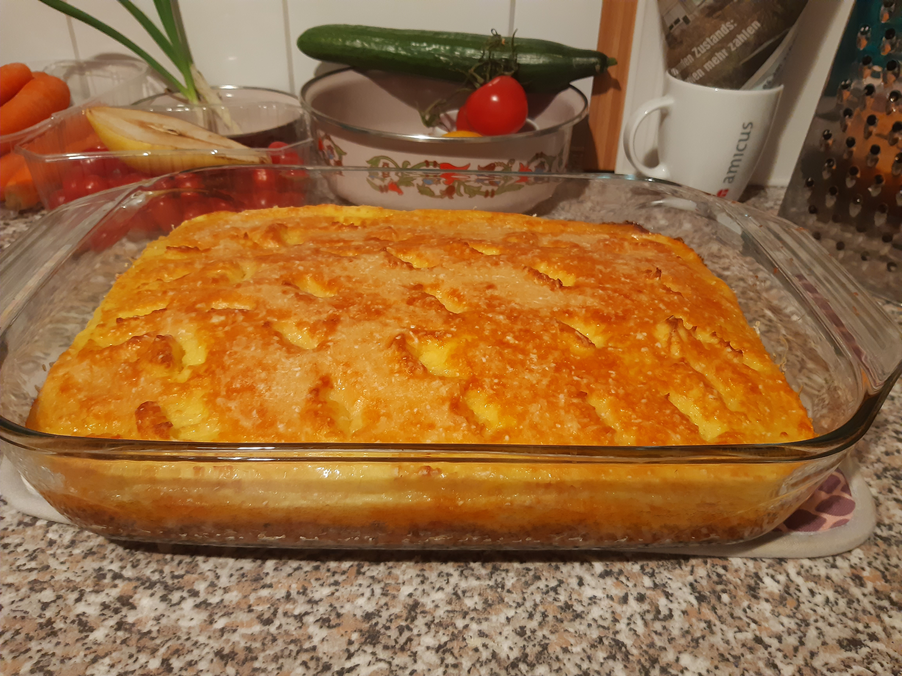

Grundsätzlich muss man sich selber die Frage stellen, wofür man den Wok oder die Pfanne nutzen möchte. Der Wok hat andere Stärken als die Pfanne. In einer Pfanne kann man Fleisch und Fisch aufgrund der Form deutlich besser anbraten. Wiederrum kann der Wok exzellent genutzt werden um Inhalte zu frittieren.

 Peruanische Causa
Peruanische Causa